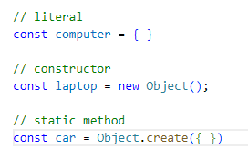
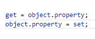
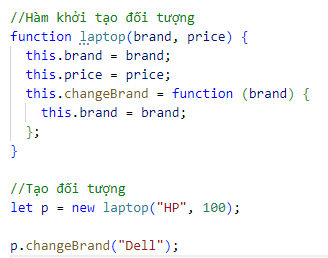
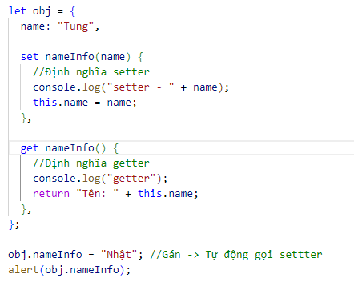
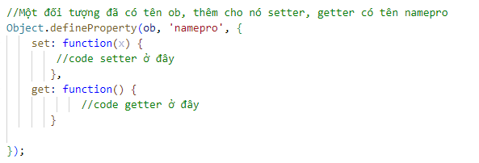
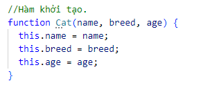

Objects trong JavaScript, objects dùng để mô tả những đối tượng thực tế trong đời thực. Object là một thực thể độc lập, với thuộc tính và kiểu.
Đối tượng trong Javascript là một tập hợp các cặp khóa - giá trị, tương tự như bản đồ, từ điển, hay hash-table trong ngôn ngữ lập trình khác.
Có 3 cách để khai báo đối tượng trong Javascript:
Ví dụ:
Bây giờ chúng ta đã có 1 đối tượng trống, chúng ta cần thêm các thuộc tính vào nó bằng cách sử dụng các trình truy cập (accessors).
Tên thuộc tính hợp lệ bao gồm chữ cái, số, kí tự,.. có thể ép thành một chuỗi, nhưng không được sử dụng các từ dành riêng như function, var, return, .v.v. Ví dụ:
Một đối tượng ngoài các thuộc tính ra nó còn chứa hàm gọi là phương thức. Một phương thức là một hàm liên kết với một object, hoặc, có thể nói phương thức là một thuộc tính của object có giá trị là một hàm. Phương thức được định nghĩa giống như cách định nghĩa hàm, ngoài trừ việc chúng phải được gán như là thuộc tính của một object.
Thường các phương thức được định nghĩa qua một hàm khởi tạo đối tượng. Ví dụ:
Một thuộc tính của của đối tượng còn thiết lập nó là hàm setter hoặc getter, nếu là setter nó chỉ được gọi qua toán tử gán giá trị cho nó, nếu là getter thì chỉ được gọi khi truy cập lấy giá trị thuộc tính.
Hàm setter định nghĩa bằng cách cho thêm set, hàm getter định nghĩa bằng cách cho thêm get. Ví dụ:
Trong trường hợp muốn định nghĩa setter / getter trong hàm tạo đối tượng thì bạn cần định nghĩa theo nguyên tắc thêm một thuộc tính vào đối tượng đã có với lệnh Object.defineProperty
this là 1 toán tử đặc biệt, trỏ đến đối tượng đang thực hiện hành vi. Giúp truy cập chính xác đến đối tượng. Cách xác định this: this là đối tượng trước dấu chấm. Ví dụ:
